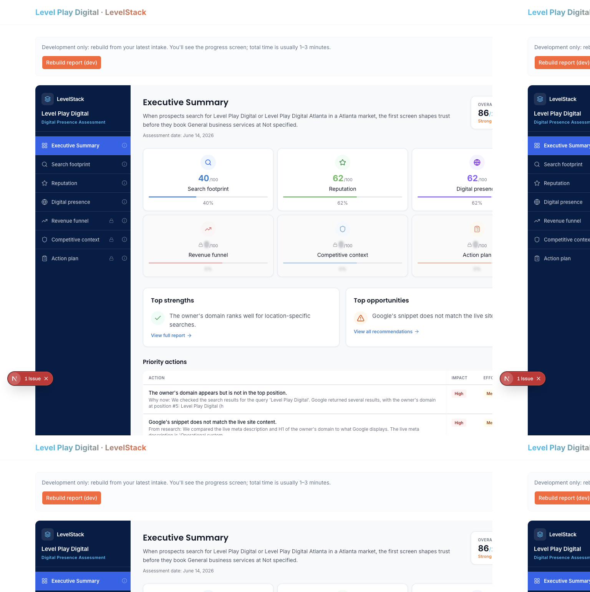
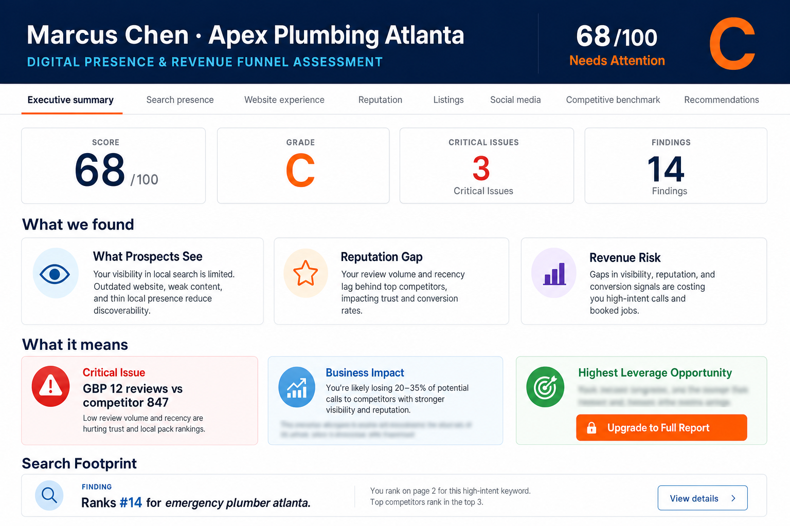
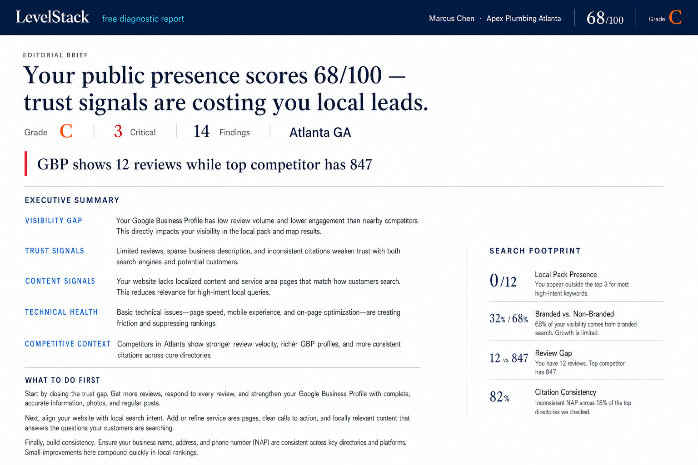
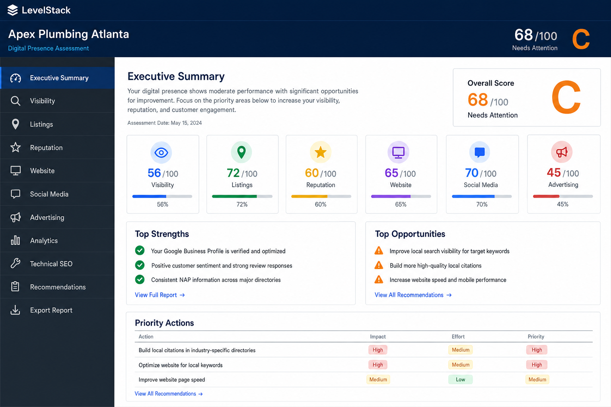
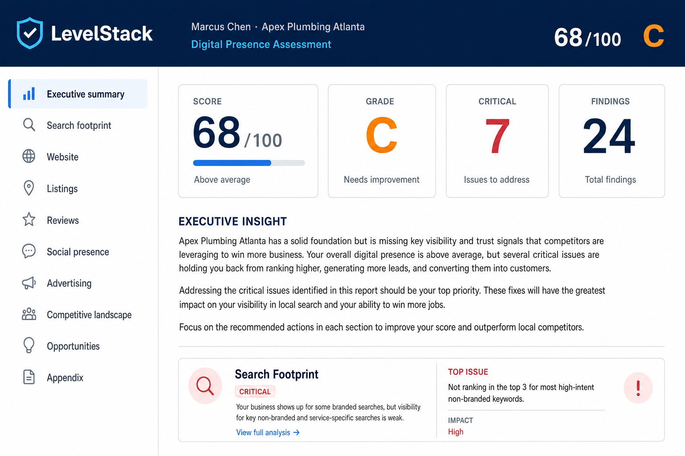
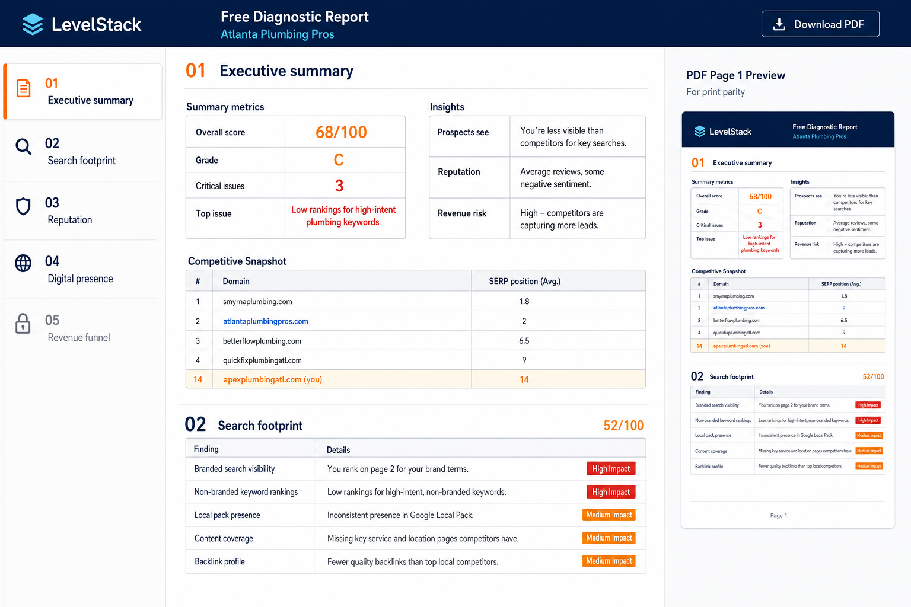
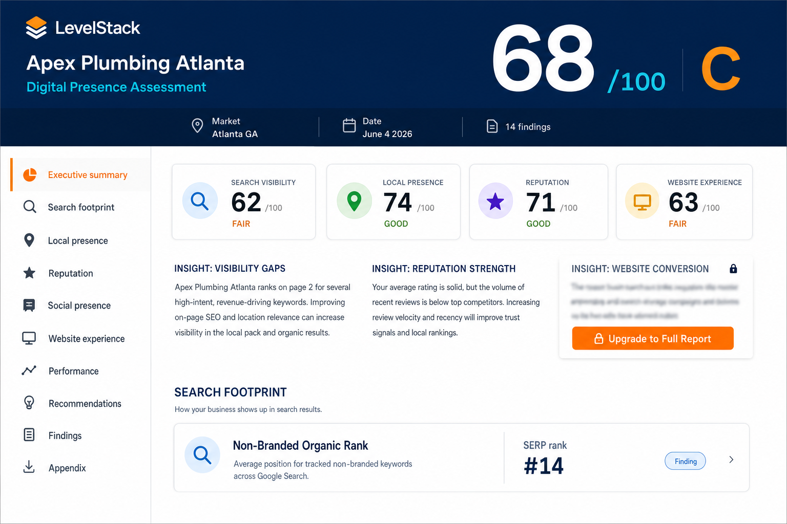

Side-by-side previews of the current build, the approved hybrid spec (A KPI cards + B editorial + A search snippet + vertical nav + navy header), and the original Option A / Option B exploration mockups from 2026-06-22.
| Area | Approved hybrid | Current build | Status |
|---|---|---|---|
| Header | Navy band: LevelStack + icon, company name, “Digital Presence Assessment”, score + grade on right (Header Variant 1) | Company/score live in navy sidebar brand block; no full-width report header band | Gap |
| Navigation | Vertical tabs, left sidebar | Vertical navy sidebar with blue active tab, row dividers | Match |
| Exec KPI row | 4 cards: Score, Grade, Critical Issues, Findings count | Overall score card + 6 section metric cards (Search footprint, Reputation, …) | Gap |
| Exec body | Design B editorial: large headline, red pull-quote, uppercase labels + prose (no card boxes) | Intro paragraph + Top strengths / Top opportunities bordered panels | Gap |
| Actions block | “What to do first” as prose paragraphs | Priority actions table with Impact / Effort / Priority badges | Gap |
| Search footprint on exec | Design A finding snippet card (e.g. rank #14 + Critical badge) | Not on exec tab — only via Search footprint section tab | Gap |
| “What it means” highlights | 3 tinted cards: Critical / Business impact / Leverage (+ blur upsell on green) | Not present on exec tab | Gap |
| Free-tier upsell | Visible Upgrade CTA on blurred sections | Blur overlay on hidden strengths/opps; locked metric cards; upgrade banner on non-exec tabs | Partial |
| Overall direction | Hybrid = scannable KPIs + consultant brief prose | Closer to full Option A dashboard (6 cards, strengths/opps, priority table) | Drifted to A |
approved.json + brief-header-1.txt

Implemented: navy sidebar, overall score card, 6 section metrics, strengths/opportunities panels, priority actions table.

Horizontal tab bar in this mockup; you chose vertical nav. Body is closest to what shipped (cards + insight rows).

Typography-led: headline, pull quote, labeled prose. Hybrid uses this for the exec body, not the KPI strip.

Includes vertical sidebar + dashboard-style exec. Compare header band vs sidebar-only branding today.



open docs/v0/design-gap-comparison.html
or serve docs/v0/ — images load from docs/v0/previews/.
Original interactive boards:
~/.gstack/projects/steemer473-lpd-levelstack/designs/report-layout-20250622/png-board.html